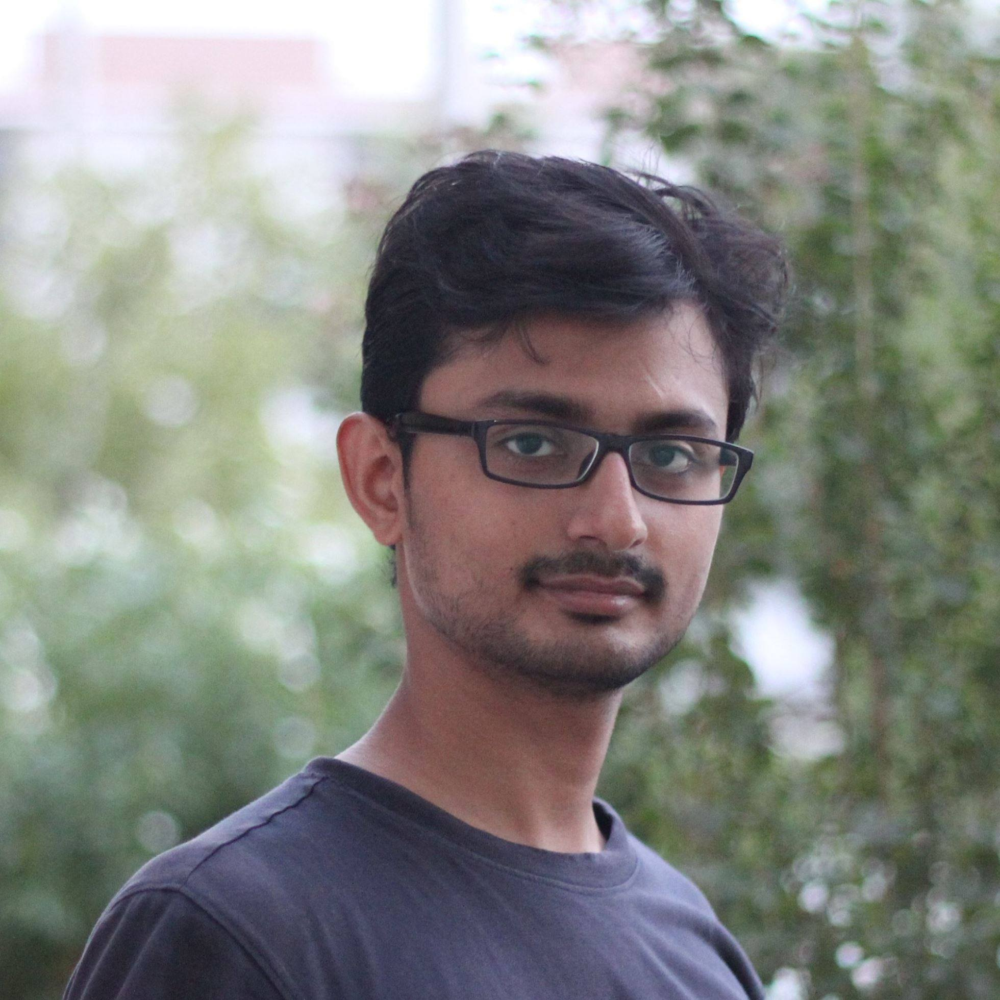

Rajdeep Das
r4das@ucsd.edu
EBU3B 3144
Department of Computer Science and Engineering
9500 Gilman Drive
La Jolla, CA 92093-0404

I am a PhD student in the department of Computer Science and Engineering at UC San Diego (UCSD) co-advised by Prof. Alex Snoeren and Prof. George Porter. I am affiliated with the Sysnet lab at UCSD where I am working on various aspects of datacenter networking. Prior to coming here I was at Microsoft Research India, working as a Research Fellow in the Mobility, Networks and Systems group.
I am a fan of networked systems and enjoy building and hacking stuff. I am also a cycling enthusiast, especially mountain biking. I do love outdoor activities in general so if you're around and looking for some fun, do ping me!
You can find my CV here.
Publications
Informed Bandwidth Adaptation in Wi-Fi Networks using Ping-Pair [CoNEXT '17]
Rajdeep Das, Nimantha Baranasuriya, Venkata N. Padmanabhan, Christoffer Rödbro, and Seth Gilbert. 2017. Informed Bandwidth Adaptation in Wi-Fi Networks using Ping-Pair. In Proceedings of the 13th International Conference on emerging Networking EXperiments and Technologies (CoNEXT '17). ACM, New York, NY, USA, 376-388. DOI: https://doi.org/10.1145/3143361.3143390
Via: Improving Internet Telephony Call Quality Using Predictive Relay Selection [SIGCOMM '16]
Junchen Jiang, Rajdeep Das, Ganesh Ananthanarayanan, Philip A. Chou, Venkata Padmanabhan, Vyas Sekar, Esbjorn Dominique, Marcin Goliszewski, Dalibor Kukoleca, Renat Vafin, and Hui Zhang. 2016. Via: Improving Internet Telephony Call Quality Using Predictive Relay Selection. In Proceedings of the 2016 ACM SIGCOMM Conference (SIGCOMM '16). ACM, New York, NY, USA, 286-299. DOI: https://doi.org/10.1145/2934872.2934907
Automatic Grading and Feedback using Program Repair for Introductory Programming Courses [ITICSE '17]
Sagar Parihar, Ziyaan Dadachanji, Praveen Kumar Singh, Rajdeep Das, Amey Karkare, and Arnab Bhattacharya. 2017. Automatic Grading and Feedback using Program Repair for Introductory Programming Courses. In Proceedings of the 2017 ACM Conference on Innovation and Technology in Computer Science Education (ITiCSE '17). ACM, New York, NY, USA, 92-97. DOI: https://doi.org/10.1145/3059009.3059026